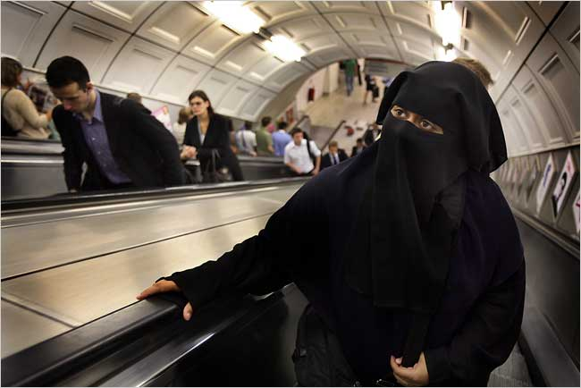

پذيرش > تریبون > مقالات > قانون ممنوعیت استفاده از پوشه در اماکن عمومی فرانسه


 قانون ممنوعیت استفاده از پوشه در اماکن عمومی فرانسه قانون ممنوعیت استفاده از پوشه در اماکن عمومی فرانسه
23 فروردین 1390 - سوده راد - نسخه قابل چاپ
تغییر برای برابری : معادلات سیاسی و امنیتی دنیا، پس از حادثه ی 11 سپتامبر، ضریب اهمیت بالایی به بنیادگرایی و بویژه از نوع اسلامی آن داد. این که عده ای در قرن 21 حاضر هستند جان خود و دیگران را برای دفاع از عقاید خود فدا کنند، موجب بروز ترس عمومی بیشتری در فضای جوامع غربی شد. در فرانسه، تلاش برای دزدی از بانک با استفاده از پوشش برقع و نقاب موجب افزایش حساسیت نسبت به آشکاری چهره و تشخیص هویت افراد در فرانسه شد. با این حال، در چند سال اخیر، اعتقادات و رفتارهای افراطی موسوم به ادیان مختلف در کشورهای غربی پررنگ تر شده است و بی تردید زنان در این میانه بیش از مردان هرینه پرداخت کرده و می کنند. در فرانسه تعداد زنان محجبه، چه با روسری، چه با پوشیدن برقع، یا نقاب، درکنار مردانی که ریش های بلند می گذارند و نعلین و دشداشه پوش در خیابان قدم می زنند، بیشتر شد. بعد از سوزانده شدن دختری در محله های مهاجر و مسلمان نشین پاریس، به دلیل عدم رعایت حجاب، بحث ها بالا گرفت و با توجه به آشکار بودن این نماد دینی، بحث ها درباره ی اسلام، اسلام سیاسی و افراطی در فرانسه بالا گرفت و مبارزه با بنیادگرایی دینی یکی از اساسی ترین برنامه های سیاسی اجتماعی فرانسه شد.
11 آوریل 2011، دوره ی شش ماهه ی آمادگی برای اجرای قانون ممنوعیت پوشاندن چهره در فرانسه وارد مرحله ی اجرایی شد. در آن زمان بحث های زیادی در مورد تناقض داشتن یا نداشتن پوشیدن برقع و نقاب با هویت ملی فرانسوی و همچنین آزادی پوشش و عقاید در گرفت. یکی از دلایل اولیه ی طرح و تصویب این قانون، تأمین امنیت ملی و شهروندی فرانسه بوده است. پیش از تصویب این قانون در 11 اکتبر 2010، در نظرسنجی که صورت گرفت از هر پنج نفر در فرانسه، چهار نفر موافق این قانون بودند و نقاب را موجب بروز احساس ناامنی دانستند. سالهاست که عکس های پرسنلی و رسمی برای انجام امور اداری در فرانسه نباید دارای هیچ گونه علایم دینی، من جمله حجاب اسلامی باشد.

فرانسه در بین کشورهای اروپایی بیشترین تعداد مسلمان را دارد و این امر با توجه به شرایط جغرافیایی این کشور و مهاجران کشورهای شمالی آفریقا روشن تر می شود. لاییسیته یا جدایی دین از سیاست یکی از ارزش های ملی و بنیادین جمهوری فرانسه به شمار می رود و حضور در سازمان های خدمات عمومی و اداری، مثل مدرسه، دانشگاه، شهرداری، بیمارستان و... با نشانه های مذهبی –در بسیاری از موارد به طور رسمی و نه اجرایی - ممنوع است. در حال حاضر در فرانسه، پوشاندن صورت، بیش از هر کس، توسط زنانی که برقع – الگوی افغانی – و یا نقاب – الگوی عربستان سعودی – می پوشند انجام می گیرد و از اینجاست که بحث در میان مسلمانان و غیر مسلمانان سکولار و اسلامگرایان افراطی بالا گرفته است.
جریمه ی پوشاندن صورت، به هر دلیلی، پرداخت جریمه تا 150 یورو و/یا شرکت در دوره های آموزش شهروندی و قانون اساسی فرانسه است. از طرفی هرکس که زنی را مجبور به پوشیدن برقع یا نقاب کند، به پرداخت 30000 یورو جریمه ی نقدی و یک سال حبس محکوم می شود. در صورتیکه این زن زیر سن قانونی باشد، جریمه به دو برابر، یعنی 60000 یورو جریمه ی نقدی و دو سال حبس افزایش میابد.
این قانون در مورد کلاه های ایمنی موتورسواران یا لباس های کار ویژه، لباس های ایمنی در برخی از ورزش ها، نقاب هایی که در برخی جشن های سنتی یا پرفورمانس های هنری استفاده می شوند استثنا قائل شده است. این ممنوعیت در کلیه ی اماکن عمومی شامل خیابان ها، وسایل نقلیه ی عمومی، محل های تجاری و فروشگاه ها، مراکز آموزشی، دفاتر پست، بیمارستان ها، دادگاه ها، مراکز اداری، پلاژها و پارک ها و به طور کلی مکان هایی که ورود عموم به آنها آزاد است، اجرا می شود.
طبق دستورالعملی که یک ماه پیش توسط وزارت کشور صادرشده است، کارکنان دولت برای تعیین هویت شخصی که صورتش را پوشانده، تنها می توانند از او بخواهند نقاب را بردارد و به هیچ وجه اجازه ندارند این شخص را مجبور به این کار کنند. در صورتیکه این فرد مخالفت کرد، باید پلیس یا ژاندارم را فراخوانند تا جرم را صورت جلسه و به مراجع قضایی تحویل دهد.
تعداد زنانی که در فرانسه از این پوشش استفاده می کنند 2000 نفر تخمین زده می شود. بر خلاف نظر بسیاری از صاحبنظران مسلمان که پوشاندن صورت را قرائت بنیادگرایانه و «طالبانی» حجاب در اسلام می دانند، تعداد دیگری هم نقاب را جزیی از حجاب و نوع والای آن دانسته و ممنوعیت استفاده از نقاب را به حساب دشمنی مستقیم با اسلام می دانند. از همین روست که تاجری مراکشی الاصل اعلام کرده است که بودجه ای یک ملیون یورویی برای پرداخت جریمه های خواهران دینی خود در نظر گرفته است.

قریب به اتفاق فمینیست های فرانسوی، نقاب و برقع را سدی برای برابری زن و مرد و وسیله ای برای راندن زنان به زندگی در حصار های سیستمی مردسالارانه دانسته و آن را محدود به نشانه ای دینی نمی بینند. آن ها تأکید دارند که باید برای حضور بیش تر زنانی که به اختیار یا به اجبار از این پوشش استفاده می کنند، غیر از وضع قانون، تلاش های فرهنگی صورت گیرد تا آنها هم بتوانند جای خود را در جامعه ی فرانسه و فرهنگ جاری پیدا کنند. بی تردید پس از اجرایی شدن این قانون تعدادی از آنها خانه نشین خواهند شد و نخواهند توانست از همان کمترین تعاملات اجتماعی را هم که با چنین پوششی بهره می بردند، برخوردار باشند. کارولین دواس، سخنگوی یکی از شبکه های فمینیستی فرانسه، می گوید: «ریشه های تاریخی حجاب به دوهزار سال پیش از میلاد مسیح برمی گردد و وسیله ای بوده است برای نشانه گذاری زنان برای پنهان کردن بخشی از بدنشان و نمایش جنسیت آنها. بی تردید این اولین تبعیض ها تا آنجا پیش رفت که قرن ها بعد زنان مجبور شدند برای گرفتن حق رأی خود نیز مبارزه کنند و مبارزه ای که همچنان ادامه دارد. به هر حال این روزها پیروان ادیان مختلف می توانند آزادانه فرایضشان را انجام دهند، ولی تا جایی که به امنیت شهروندان دیگر آسیب نرسد. در مورد برقع و نقاب، پرسش پیش از این که در مورد حجاب اسلامی و انواع آن مطرح شود؛ در مورد احساس ناامنی در برابر پدیده ای نا آشنا در فرهنگ و تاریخ فرانسه بحث می شود.»
با این که بسیاری از اسلامگرایان تصویب این قانون را به اسلاموفوبیا، یعنی ترس از اسلام، نسبت می دهند و اجرای قانون را ناقض حق انتخاب پوشش، آزادی عقیده و انجام فرایض دینی می دانند، بسیاری از مسلمانان هم به شدت از این قانون دفاع می کنند. نه تنها روشنفکران دیتی اسلامی، بلکه خود این زنان هم پوشاندن چهره را فراتر رفتن از دستورات اسلام می دانند. یکی از این زنان می گوید: « البته که نقاب در اسلام اجباری نیست، ولی پیامبر به زنانش اینگونه پوشش را توصیه کرده و الگوی ما هم همسران پیامبر هستند. »
برقع از نظر برخی امامان سلفی و بنیاد گرا، نماد پاکیزگی زنان مسلمان و پرچم اسلام در مبارزه با کفار است. با توجه به تعداد کم زنانی که اینگونه در اماکن عمومی حاضر می شوند و حتی با لباس های مشکی خود توجه بیشتری هم به خود جلب می کنند، این ایده دور از ذهن نیست و این پرسش مطرح می شود که آیا حصار ارتباطی ناشی از این رفتار، همان مفهوم جنگ ادیان سیاسی نیست؟ به نظر جواد اکبرین، پژوهشگر دینی، «این جنگ، زورآزمایی بین دین و مردم سالاریست که به هر روی نا مبارک است. »
طرفداران این قانون، غیر از تأمین امنیت اجتماعی و احترام به ارزش های مردم سالاری فرانسه، برابری جنسیتی و لائیسیته را هم در این قانون متبلور می بینند. آنها می دانند اجرای این قانون ساده نیست و اینگونه پوشش ها همچنان در فرانسه در خیابان ها و مترو ها و اتوبوس ها حضور خواهند داشت. تعدادی هم این ممنوعیت پوشش را با اجبار پوشش اسلامی در ایران مقایسه می کنند و هر دو روش را ناقض آزادی بشر می دانند.
در اولین ساعات دیروز صبح، تعدادی از زنان برقع پوش در مقابل کلیسای بزرگ نوتردام پاریس تجمع کردند تا بگویند همچنان به پوشاندن صورت خود ادامه خواهند داد. با توجه به این که پلیس از این تحصن اطلاعی نداشته است و زنان به درخواست پلیس پاسخی نداده اند، یکی از آنها به کمیساریا منتقل شده و بعد از چند ساعت نیز آزاد شد.
ارسال به
بالاترین
،
توییتر
،
فریندفید
،
فیسبوک
در همين بخش :
 دهمین دورۀ مراسم تندیس صدیقه دولت آبادی ۱۳۹۲ دهمین دورۀ مراسم تندیس صدیقه دولت آبادی ۱۳۹۲
کارت پستالهایی به بهانهی هشت مارس و به یاد همهی مبارزین راه برابری
بیانیه بیش از 350 تن از مدافعان حقوق زنان به مناسبت روز جهانی زن؛ زنان هر روز فرودستتر میشوند
لباسی که برای تن ما دوخته اند! /اعظم بهرامی
چالشها و چشمانداز فعالیت مدنی زنان
ديگر بخش ها :
طرح یک میلیون امضا
|
مقالات
|
سایت نوشته ها
|
اخبار
|
گزارش كمپين
|
گفت و گو
|
علیه سکوت
|
كوچه به كوچه
|
نامه های شما
|
گزارش ویژه
|
گفتگو با اعضا
|
ویژه سالگرد کمپین
|
تصویر برابری
|
دل آرام علی
|
تریبون
|
مقالات
|
تاریخ شفاهی
|
خارج از چارچوب
|
کتابخانه
|
درباره کمپین
|
کمپین در شهرها
|
کمپین در بند
|
صدای تغییر
|
ویژه 22 خرداد
|
لایحه حمایت از خانواده
|
گالری
|
عشا مومنی
|
امیر یعقوبعلی
|
خدیجه مقدم
|
راحله عسگری زاده و نسیم خسروی
|
پروین اردلان،جلوه جواهری، مریم حسین خواه، ناهید کشاورز
|
زینب پیغمبرزاده
|
سعیده امین، سارا ایمانیان، محبوبه حسین زاده، ناهید کشاورز و همایون نامی
|
احترام شادفر
|
نسیم سرابندی زاده،فاطمه دهدشتی
|
وبلاگ مهمان
|
پرونده خرم آباد
|
دستگیری ها
|
مریم مالک
|
پرستو اللهیاری
|
مهرنوش اعتمادی
|
سمیه رشیدی
|
Other Languages
|
همراهان
|
«فراخوان کمپین ده روز با بهاره هدایت»
| English
|